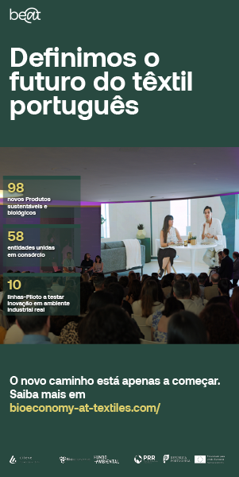

be@t
Graphic design and video for be@t, a project on bioeconomy in textiles, made at Magellan Circle.

- Project
- be@t
- Company
- Magellan Circle
- My role
- Graphic design and video
- Deliverables
- Digital banner, 300 × 600 px
- Website
- bioeconomy-at-textiles.com
More of the project is on its way. The banner is in Portuguese.